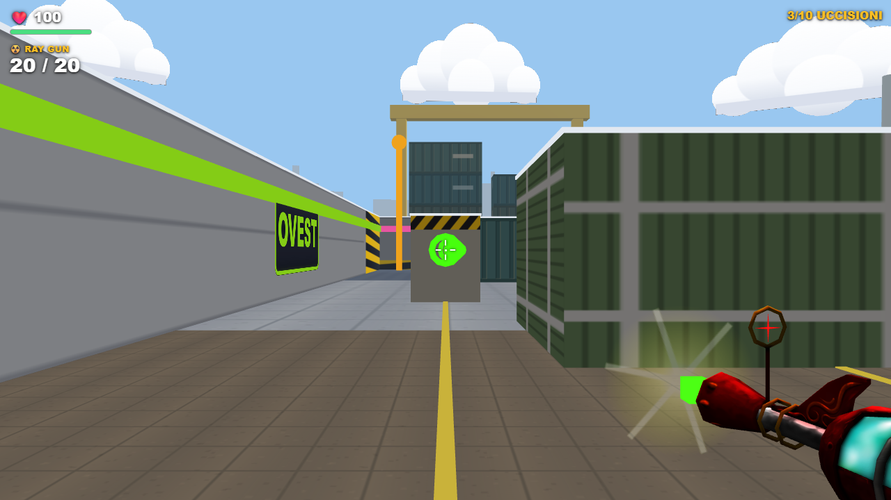
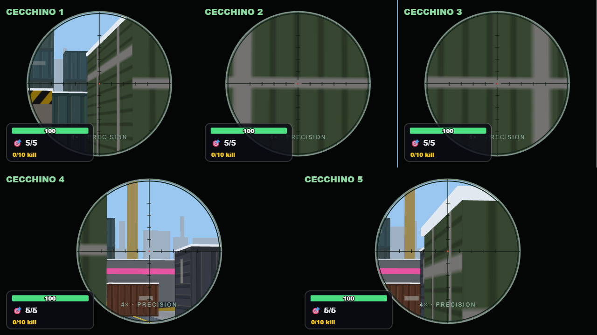
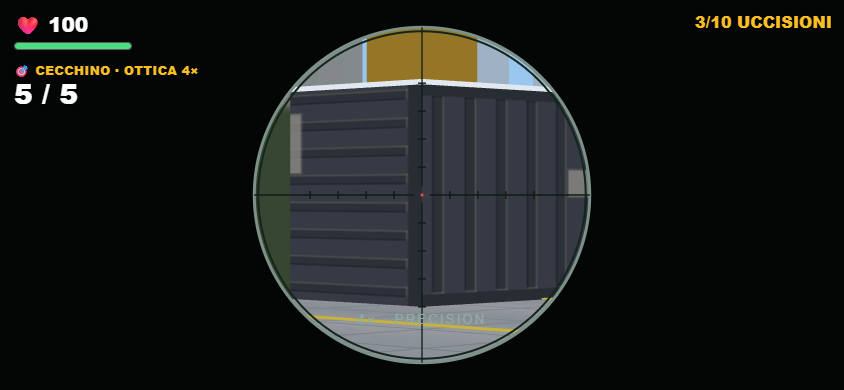
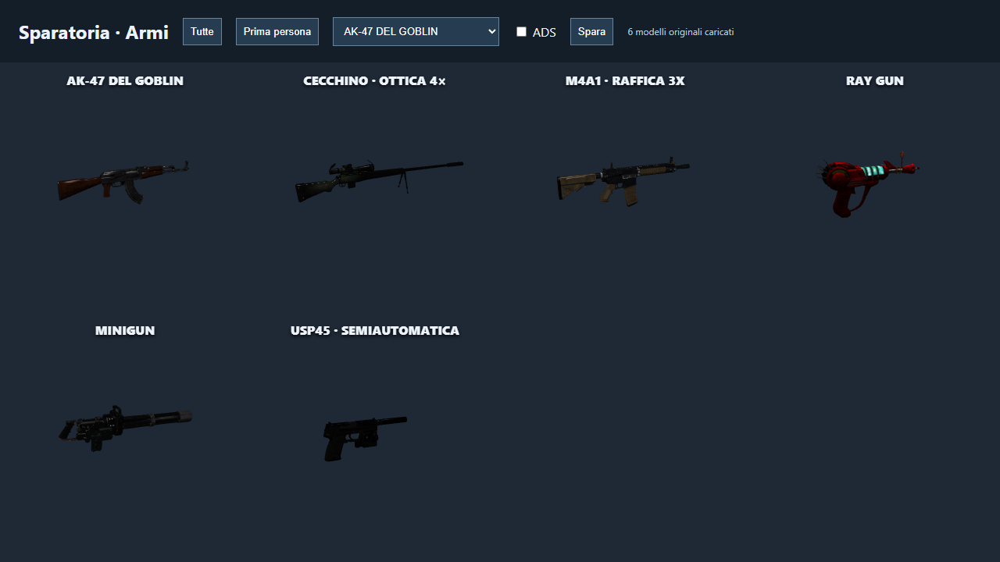

PARTY GAME / SPARATORIA
Sei armi. Sei modi di combattere.
Cecchino con ottica 4× e 125 danni, USP45 semiautomatica rapida, Ray Gun rossa con impulsi energetici verdi. AK, M4 e minigun con rinculo, suoni e bilanciamento distinti.
CECCHINO · 125 DANNIUSP45 · FINO A 7 COLPI/SUNA SOLA RAY GUN
Apri il giocoModifiche e testRay Gun: impulsi verdi
Proiettili in volo, collisioni sulle coperture e piccolo impatto ad area. Il bersaglio diretto riceve un solo danno.

Ottica leggibile anche in cinque
Zoom reale 4×, reticolo con tacche e punto rosso, munizioni e uccisioni sempre visibili.

Sul telefono

I sei modelli
